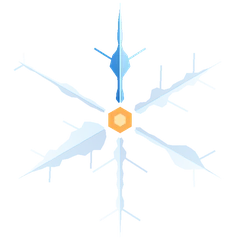
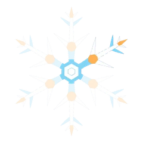
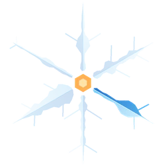
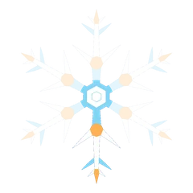
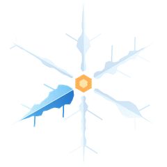
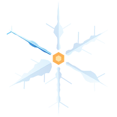

3.12.2026–28.1.2027 · Zwift
Kuusi iltaa, kuusi erilaista kisaa
Kisat ajetaan torstaisin klo 18.30 Suomen aikaa. Viisi parasta lasketaan, joten yhden voit jättää väliin.
-

Kisa 1 · to 3.12.
Jarvis Seaside Sprint × 2
Nopeat kirit: kuka osuu pisteille
Kisalinkki tulee tähän
-

Kisa 2 · to 10.12.
Double Espresso
Rullaava kisa: peesi ja ajoittaminen
Kisalinkki tulee tähän
-

Kisa 3 · to 17.12.
London Loop × 2
Box Hill kahdesti
Kisalinkki tulee tähän
- Joulutauko
-

Kisa 4 · to 14.1.
Tempus Fugit
Sinä ja kello: ei peesiä, ei power-uppeja
Kisalinkki tulee tähän
-

Kisa 5 · to 21.1.
2019 Worlds Harrogate Circuit × 3
MM-reitti ja sarjan pisin kisa
Kisalinkki tulee tähän
-

Kisa 6 · to 28.1.
Three Step Sisters
Finaali kolmella nousulla
Kisalinkki tulee tähän
Kisoihin pääsee vain näiden linkkien kautta. Tapahtumat eivät näy Zwiftin julkisessa listauksessa.
Ei erillistä ilmoittautumista
Näin pääset mukaan
- Luo ZwiftPower-tiliTili on pakollinen, ja ilman sitä et näy tuloksissa. Varaa tilin luontiin aikaa, äläkä jätä sitä kisapäivään.
- Laita varusteet kuntoonTarvitset Zwiftin, sykemittarin ja älytrainerin tai tehomittarin. ZPoweria ei hyväksytä.
- Tarkista profiilisiMaa, ikä ja sukupuoli tarkistetaan ZwiftPower-profiilista, joten niiden pitää olla oikein.
- Aja kisa 1 tai 2Avaa kisalinkki ja valitse ikääsi vastaava lähtö. Osallistuminen riittää, ja kategoriasi lukittuu siihen koko loppusarjaksi.
Miehet ja naiset
Kisaat omassa ikäluokassasi
- U23
- Avoin
- 40+
- 50+
- 60+
Kategoriaa ei valvota automaattisesti, vaan valitset itse ikääsi vastaavan lähdön. Kategoriat tarkistetaan pistokokein. Voittajat palkitaan kategorioittain miehissä ja naisissa.
Lue ennen ensimmäistä kisaa
Säännöt ja pisteet
Kisassa
- Sykemittari on pakollinen.
- ZPower ei käy: tarvitset älytrainerin tai tehomittarin.
- Myöhässä ei pääse mukaan, joten ole lähdössä ajoissa.
- Pyörän päivitykset on neutraloitu.
- Aika-ajopyörä on sallittu vain kisassa 4.
- Power-upit ovat käytössä muissa kisoissa paitsi aika-ajossa.
- Paita on vapaa. Oman tiimin paitaa suositellaan.
Yhteistulos
Sarjan tulokseen lasketaan viisi parasta kisaa kuudesta.
Pisteasteikko julkaistaan tällä sivulla ennen ensimmäistä kisaa.
Tiimikilpailu
Tiimit kisaavat ZwiftPower-tiimien kautta. Tiimin kolmen parhaan ajajan pisteet lasketaan yhteen, ja niistä tehdään oma tulostaulu.
Päivittyy kisojen jälkeen
Tulokset
Kisakohtaiset tulokset ovat ZwiftPowerissa. Sarjatilanne ja tiimien tulostaulu tulevat tälle sivulle ensimmäisen kisan jälkeen.
Kysyttävää?
Kysymyskanava lisätään tähän ennen sarjan alkua.